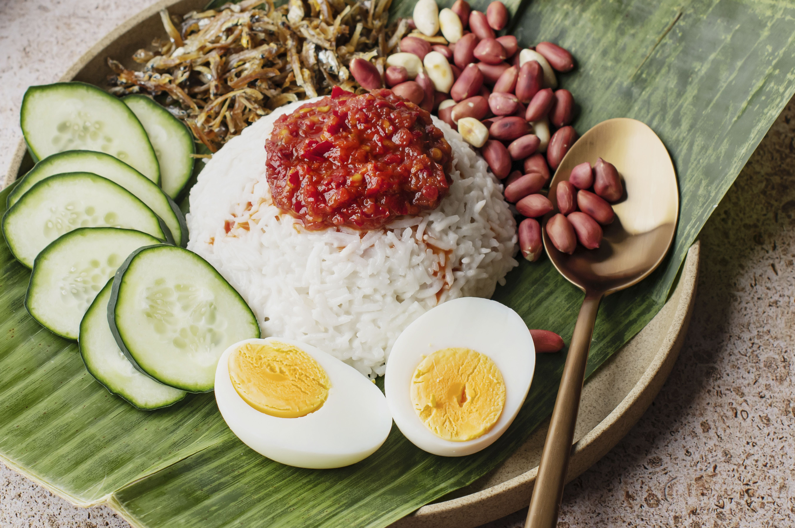

Hobby: Reading Web Novel and Comics
I love to spend my free time with reading web novel or comics. Unlike printed book, I could pretty much able to read anywhere and anywhen I want. Web Novels also normally full of fantasy and actions genre, that are my favourite genre.

Hobby: Playing Video Game
Playing Video Game is another hobby I deeply enjoy. It reduce my stress level and I also enjoyed playing it with my friends. The type I love the most is Strategy games.

Favorite Food
My favorite food is nasi lemak, mostly because it is what I normally ate in the morning before I go to school. Though I like it a lot due to nostalgic, Nasi Lemak still is a delicious meal.